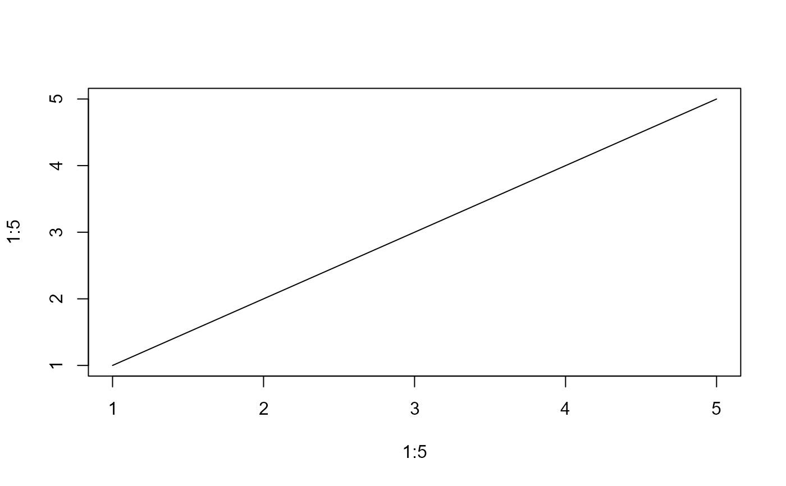
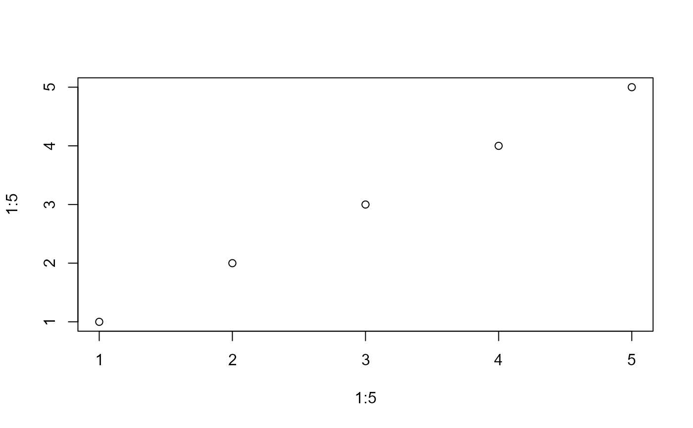
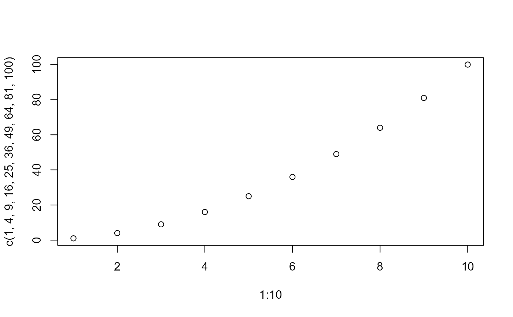

Conditionally evaluate a function depending on the value of an argument. This is a convenient helper for optional features such as plotting, logging, or callbacks, where the user can enable, disable, or parameterize a function call via a single argument.
Arguments
- fun
a function to be called
- arg
controls whether and how
funis called:FALSE,NULL, orNA:funis not called andNULLis returned invisibly.TRUE:funis called withdefaults(if provided), or with no arguments.A fully named list:
funis called with the list elements as arguments. Ifdefaultsis provided, it is merged witharg, where elements ofargoverride those indefaults.
- defaults
a named list of default arguments passed to
funwhenarg = TRUE, or used as a base whenargis a list. Default isNULL.- forbidden
optional character vector of argument names that are not allowed. If any of these appear in
arg, they are removed before callingfun. A warning is issued unlesswarn = FALSE.- warn
logical. If
TRUE(default), a warning is issued when forbidden arguments are removed.
Value
Returns the result of fun(...) if called. If arg is
FALSE, NULL, or NA, returns NULL invisibly.
Details
This function implements a flexible pattern for optional function calls:
Enable/disable behavior with
TRUE/FALSECustomize behavior with a list of arguments
Provide safe defaults and restrict certain arguments
When merging defaults and arg, user-supplied arguments take
precedence. Unlike modifyList, elements with the value
NULL are preserved and passed on to fun (so that an explicit
NULL can be used to reset an argument).
See also
Other pkg.args:
extractArgs(),
getDotsArg(),
mergeArgs(),
recycle()
Examples
# Simple usage: skip
callIf(message, FALSE)
# Call with defaults
callIf(message, TRUE, defaults = list("Hello world"))
#> Hello world
# Call with explicit arguments
callIf(message, list(x = "Hello from callIf"))
#> Hello from callIf
# With defaults + override
callIf(plot, list(x = 1:5),
defaults = list(y = 1:5, type = "l"))

# Forbid arguments
callIf(plot,
list(x = 1:5, y = 1:5, col = "red"),
forbidden = "col")
#> Warning: Ignoring forbidden argument(s) for 'plot': col

# Typical use case: optional plotting
x <- 1:10
y <- x^2
callIf(plot, TRUE, defaults = list(x, y))
